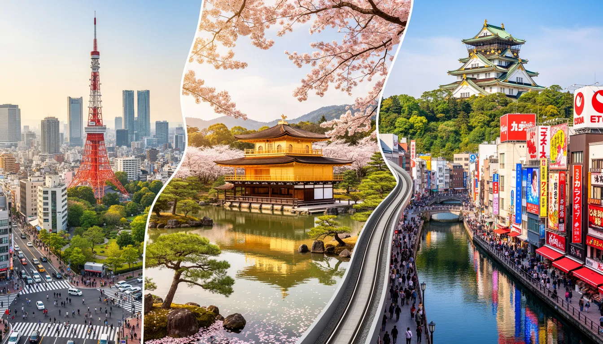
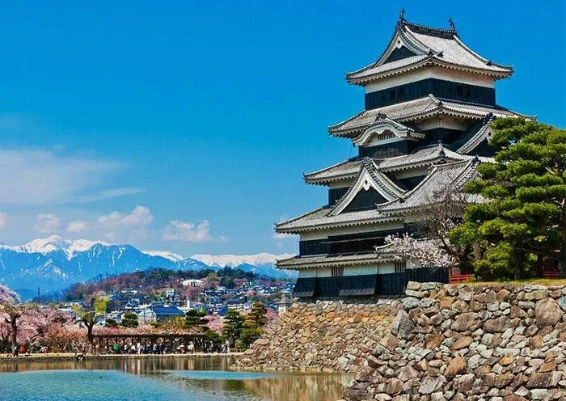
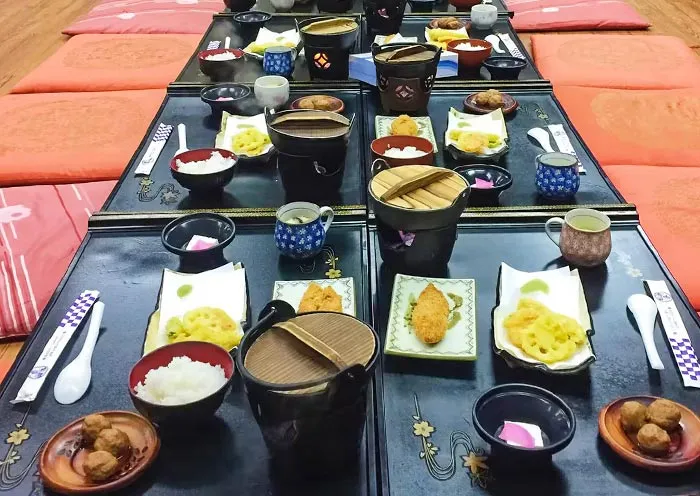

Dream Destination: Sakura Season
Data
Area:
377,975 sq km
Population:
125.1 Million
Capital:
Tokyo
Language:
Japanese
Currency:
Japanese Yen (¥)
Time Zone:
UTC +9 (JST)
Calling Code:
+81
Internet TLD:
.jp
Weather
Temperature:
Conditions:
Partly Cloudy
Wind:
Wind Chill:
My Japan Travel Dreams

Golden Route Itinerary
A dream route connecting the futuristic streets of Tokyo, the traditional shrines of Kyoto, and the lively neon food-haven of Osaka. It is the ultimate way to explore the beauty and contrasts of Japan.

Osaka Castle in Spring
Walking through the gardens of Osaka Castle during the cherry blossom (sakura) season. Seeing the historic castle walls framed by soft pink blossoms is one of my biggest life dreams.

Osaka's Street Food
Osaka is famous as the "Nation's Kitchen" (Tenka no Daidokoro). Exploring the food culture is a primary goal, specifically tasting local dishes like fresh Takoyaki, savory Okonomiyaki pancakes, sushi, and warm bowls of ramen.